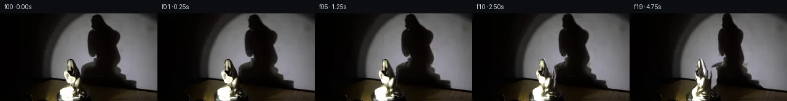

![首帧]()

Round 00
2026-11-05T04:55:51.941035+00:00像素候选变化代码 +218/−0inspection 更新
pixels 4b351505fe19e503 · code 7fd95a589a3329a4
查看本轮 generate.py 真实 diff
--- previous/generate.py
+++ current/generate.py
@@ -0,0 +1,218 @@
+"""Pixel-only, source-textured 2.5D turn with a deforming shadow.
+No image API, network, trained model, reference input, or external renderer.
+"""
+from pathlib import Path
+import json
+import numpy as np
+from PIL import Image, ImageDraw
+from scipy.ndimage import gaussian_filter, map_coordinates
+from scipy.interpolate import PchipInterpolator
+from artifact_io import save
+
+ROOT = Path(__file__).resolve().parent
+W, H = 256, 144
+source = np.asarray(Image.open(ROOT / 'first_frame.png').convert('RGB'), dtype=np.float64)
+yy, xx = np.mgrid[:H, :W].astype(float)
+
+# Source silhouette measured from RGB transitions. Black self-shading is included.
+statue_y = np.array([74,75,76,78,80,85,90,94,98,102,105,108,112,116,118,120,122,124,126,128,130,132,134,136,138,140,143],float)
+statue_l = np.array([113,111,109,108.8,108.4,109.5,108.5,102.8,102.7,103.4,104.8,107.4,107.8,109,106.2,104.4,101.5,98.4,96.6,96.5,96.5,96.5,97.6,97.8,98,98.4,99])
+statue_r = np.array([118,119,120,121.4,122.4,124.7,127.6,130.4,131,131.5,131,130.5,130.6,130,130,129.8,129.8,130.6,131,135.5,137.8,135,134.5,133,131.2,131,130])
+left_profile=PchipInterpolator(statue_y,statue_l,extrapolate=True)
+right_profile=PchipInterpolator(statue_y,statue_r,extrapolate=True)
+
+def silhouette(x,y):
+ l=left_profile(np.clip(y,74,143));r=right_profile(np.clip(y,74,143))
+ return np.clip((x-l)/1.05+0.5,0,1)*np.clip((r-x)/1.05+0.5,0,1)*np.clip(y-73.65,0,1)
+
+mask0 = silhouette(xx,yy)
+
+# Clean wall: RGB interpolation between measured illuminated regions.
+# Frame-specific row interpolation respects the static spotlight/floor gradients.
+wall = source.copy()
+shadow_y = np.array([0,2,5,10,20,30,40,50,60,65,68,70,75,80,85,90,95,100,105,110,115,120,123,125,128],float)
+shadow_l = np.array([153,151,147,145,145,141,139,139,141,143,146,146,149,150,148,129,127,127,126,127,126,127,129,133,140],float)
+shadow_r = np.array([165,164,168,172,179,196,199,194,196,198,198,199,197,196,195,199,201,207,210,224,225,226,229,242,254],float)
+sl=PchipInterpolator(shadow_y,shadow_l)
+sr=PchipInterpolator(shadow_y,shadow_r)
+
+for y in range(129):
+ lo=float(sl(y));hi=float(sr(y))
+ # Use immediate samples outside the shadow penumbra. Fit smooth row illumination.
+ a=int(max(85,lo-4));b=int(min(255,hi+5))
+ if y<108:
+ pts=np.r_[np.arange(max(87,a-23),a+1),np.arange(b,min(256,b+30))]
+ valid=(mask0[y,pts]<.02)
+ pts=pts[valid]
+ # Avoid the left edge of the spotlight; its hard illumination falloff is fixed.
+ pts=pts[source[y,pts].mean(1)>45]
+ if len(pts)>=6 and b<253:
+ t=(pts-170)/70
+ for channel in range(3):
+ fit=np.polyfit(t,source[y,pts,channel],2)
+ values=np.polyval(fit,(np.arange(W)-170)/70)
+ wall[y,:,channel]=np.clip(values,0,190)
+ else:
+ for channel in range(3):
+ wall[y,:,channel]=np.interp(np.arange(W),[a,b],[source[y,a,channel],source[y,b,channel]])
+ elif y<124:
+ # Wall behind the lower shadow. Left samples lie on the foreground floor,
+ # so extend the still-visible right-hand illuminated wall smoothly.
+ right=np.median(source[max(0,y-1):y+2,228:242],axis=(0,1))
+ for channel in range(3):
+ wall[y,:,channel]=right[channel] + .075*(232-np.arange(W))
+ else:
+ # The lower wall/table junction falls sharply. Keep this junction fixed.
+ floor_left=np.median(source[y,84:95],axis=0)
+ floor_right=np.median(source[min(y+5,143),190:213],axis=0)
+ for channel in range(3):
+ wall[y,:,channel]=np.interp(np.arange(W),[92,170,231,255],[floor_left[channel],floor_right[channel],max(floor_right[channel],18),source[y,255,channel]])
+wall = gaussian_filter(wall,sigma=(.7,.7,0))
+
+# Bound the shadow to its observed penumbra and prevent foreground contamination.
+support=(yy<=128)*np.clip((xx-sl(np.clip(yy,0,128)))/2+.5,0,1)*np.clip((sr(np.clip(yy,0,128))-xx)/2+.5,0,1)
+support*=np.clip((xx-right_profile(np.clip(yy,74,143))-1)/2,0,1)*(yy>=74)+(yy<74)
+ambient=np.array([6.,3.3,2.4])
+wall_luma=wall.mean(2)
+source_luma=source.mean(2)
+attenuation=np.clip((wall_luma-source_luma)/np.maximum(wall_luma-ambient.mean(),10),0,1)*support
+# Retain real penumbra and texture, but remove tiny fitting deviations at polygon rims.
+attenuation=np.where(attenuation>.04,attenuation,0)
+
+# Foreground clean plate. The lower support remains fixed and the porcelain is
+# textured with original pixels; only pixels revealed by rotation need this fill.
+plate = source.copy()
+for y in range(H):
+ if y<108:
+ vals=wall[y].copy()
… diff truncated; 131 more lines …